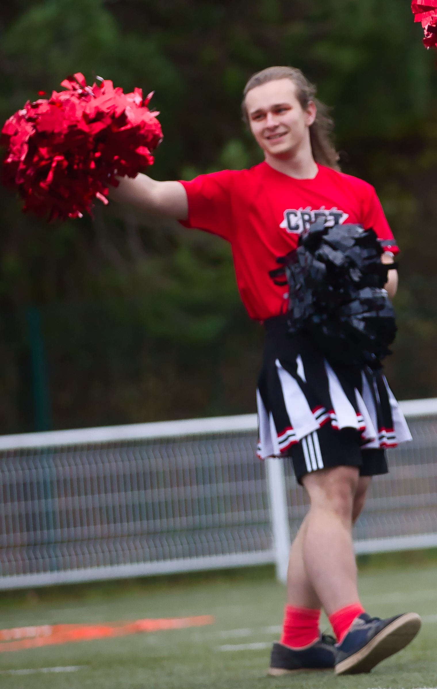
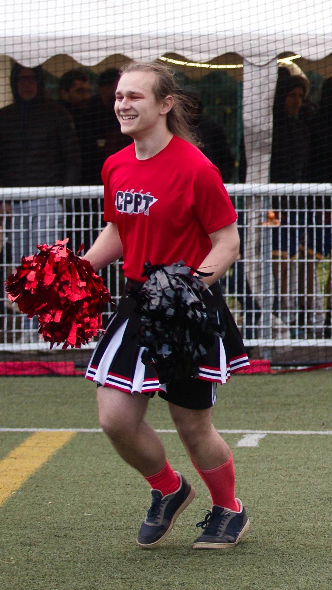
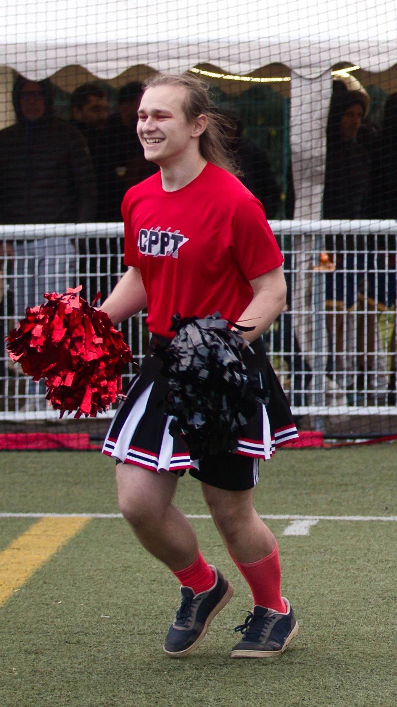
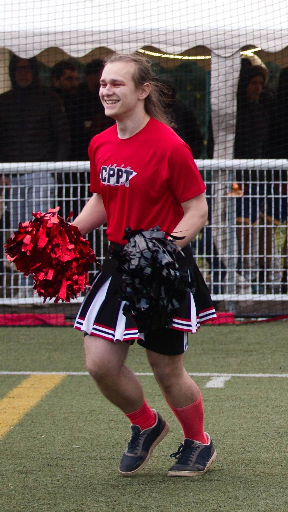
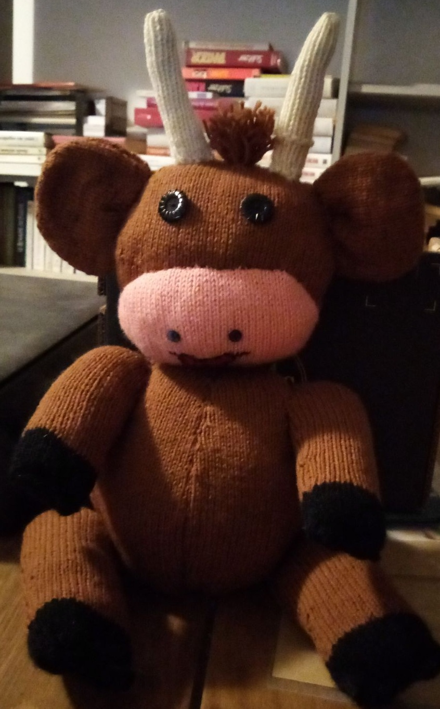
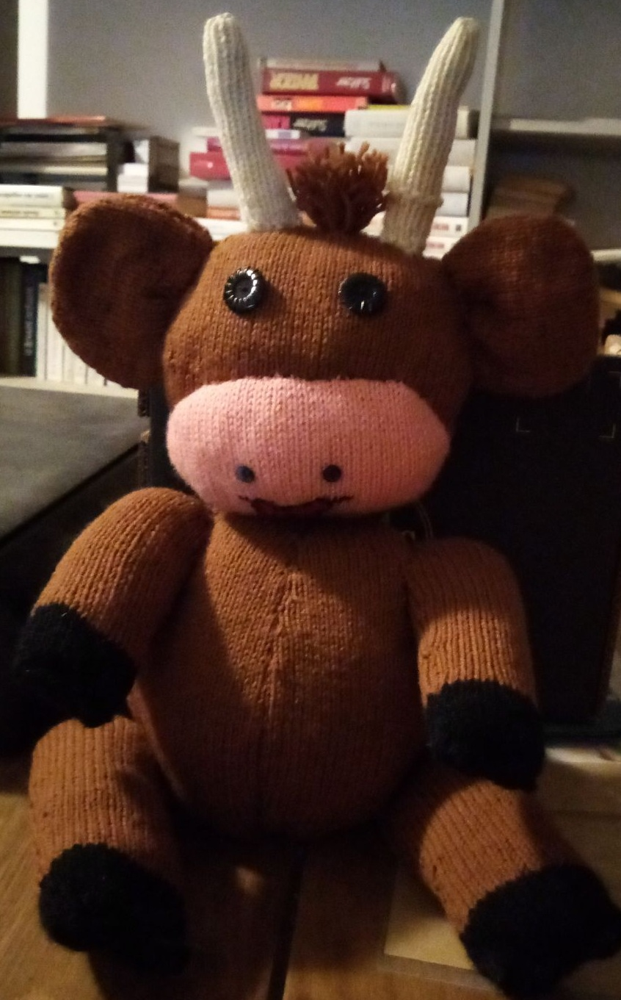

La lecture
Quand j'ai du temps libre ce que je fais généralement c'est que je lis
que ce soit roman en ligne ou livre papier, c'est pour moi un moyen de m'échapper
de la réalité et pour prendre un moment pour moi

Le Cinéma
Je vais souvent au cinéma avec mon père et mon frère,
c'est un moyen pour moi de faire une pause avec la réalité
et découvrir de nouveaux horizons

 


Les Pompoms
J'adore les pompoms depuis que j'ai commencé à en faire en première année
De la Prépa T² depuis je continue d'en faire. J'ai déjà fait plusieurs
Représentation pour des matchs pour le TMB ou pour le championnat national de Lacrosse.
 


Le Crochet/Tricot
Un de mes passions dans mon temps libre est de faire du crochet,
comme vous pouvez le voir, j'ai déjà réalisé beaucoup de peluches très
Douces et mignonnes.